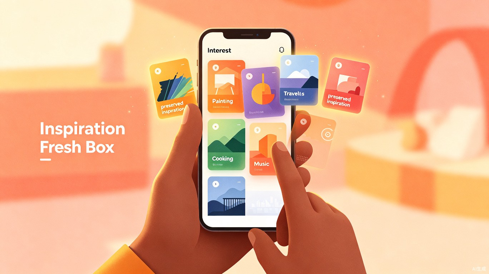
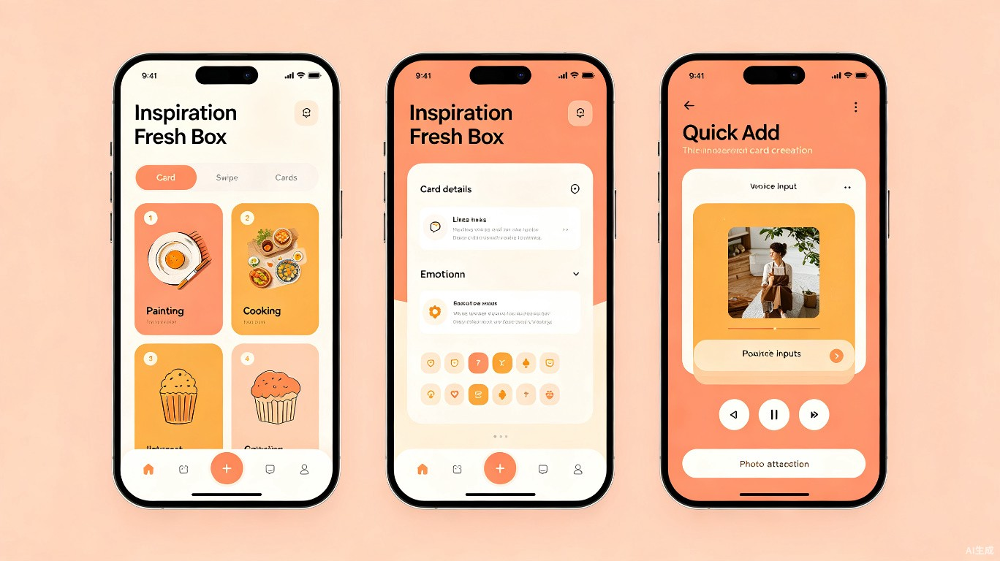
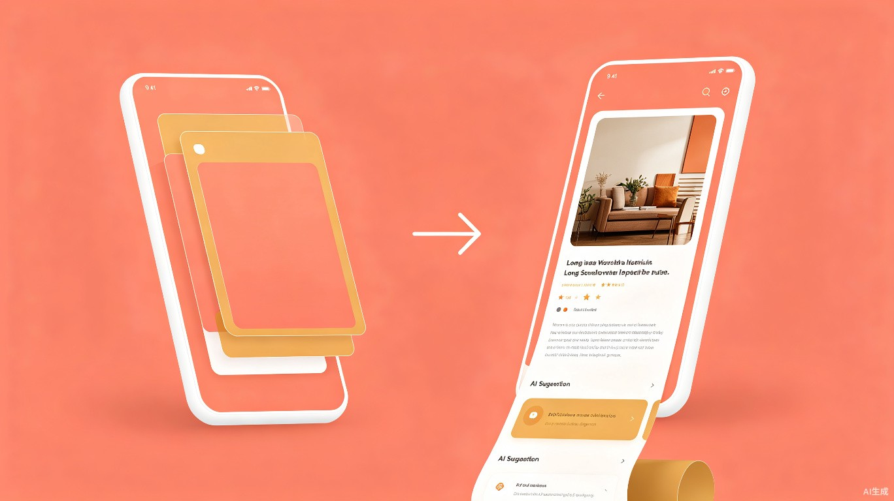
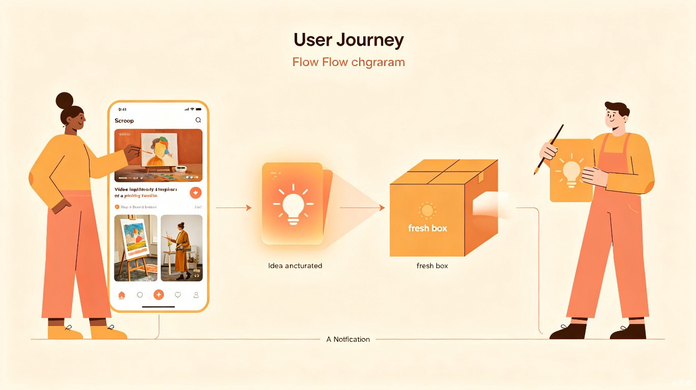

创意介绍
"我收藏过一个水彩星空渐变的技巧，当时很想试，但后来打开收藏夹只看到一堆'画画'相关的帖子，那个具体的心动感已经完全没了。"
用户在日常浏览中积累了大量感兴趣的内容收藏，但在真正空闲时，却面临"想不起来收藏了什么"和"想不起来当初具体被打动的细节"两个困境。现有内容平台的收藏功能存在入口层级深、信息密度过高等问题，用户打开 App 后容易陷入推荐流的干扰，收藏内容大量闲置，难以转化为实际的行动和体验。
灵感保鲜盒是一款极简手机 App，定位为兴趣收藏整合工具。首页只展示一张兴趣点卡片，上下滑动切换；左滑展开成可下滑的长页面查看详情；右滑收起回到首页。通过系统分享菜单从小红书、抖音等平台一键分享内容自动生成卡片，也可通过首页"+"按钮手动添加。
当前痛点
入口太深
收藏夹不在首页，打开 App 很容易被推荐流吸引走，收藏的东西再也没看过。
信息过载
同类帖子可能收藏了几十条，光"画画"就攒了十几条，具体的心动细节被淹没在一堆泛泛的收藏里。
缺乏聚焦
没有一个干净的地方让你一次只面对一个具体的兴趣点，简单问自己"这个，现在要不要试试？"
现有收藏工具
- 入口不在首页，容易被带跑
- 收藏内容列表式堆叠
- 同类帖子重复收藏严重
- 无法还原当初的心动细节
- 从收藏到行动没有引导
灵感保鲜盒
- 首页即卡片，零干扰
- 一张卡片 = 一个具体灵感
- 缩略图封面还原心动瞬间
- 左滑展开查看链接、记录、AI建议
- 最小行动步骤引导尝试
目标用户与使用场景
面向18-35 岁年轻用户，尤其是喜欢在内容平台随手收藏但很少回头去看的上班族和大学生。
周末下午
想找点事做但不知道做什么，打开保鲜盒翻到一张卡片，决定试试水彩。
下班后
想放松但想不起来之前收藏了什么，首页卡片直接给出一个选择。
午休时间
想学点新东西但打开内容平台就被刷走注意力，极简界面不受干扰。
朋友推荐
朋友推荐了一个有趣的事情，当时没时间做，打开"+"按钮快速记下来。
价值与意义
效率提升
将"从有闲到行动"的路径从"打开App→被推荐流吸引→放弃"缩短为"打开App→看到一张卡片→试试看"。一张卡片对应一个具体的灵感瞬间，配上原始截图，看一眼就能回忆起当时的心动。零干扰、零决策负担。
社会价值
帮助人们把碎片时间里积累的兴趣真正转化为行动和体验。卡片上可设置"最小行动步骤"（如"买一盒固体水彩"），把模糊的兴趣变成具体的起点。
交互设计
核心理念："一张卡片 = 一个具体的灵感瞬间"。不笼统归类为"画画"，而是精确到"水彩星空渐变技巧"——保留打动你的那个具体细节。

手势交互
| 手势 | 动作 |
|---|---|
| ↕ 上下滑动 | 切换不同卡片，上下边缘露出相邻卡片 |
| ← 左滑 | 展开成可下滑的长页面，展示链接、记录、AI 建议等 |
| → 右滑 | 长页面收起，回到首页单卡片状态 |
| + | 点击首页角落"+"按钮，手动添加新卡片（文字/照片/语音/链接） |
智能机制
兴趣度衰减与归档
按最后点开时间计算兴趣度，超时未点开的卡片自动归档，首页始终保持少量精选卡片。
AI 场景化推送
AI 识别卡片内容，推断适合的时间点推送。如"做一份好吃的甜品"在周末下午推送。

用户旅程
